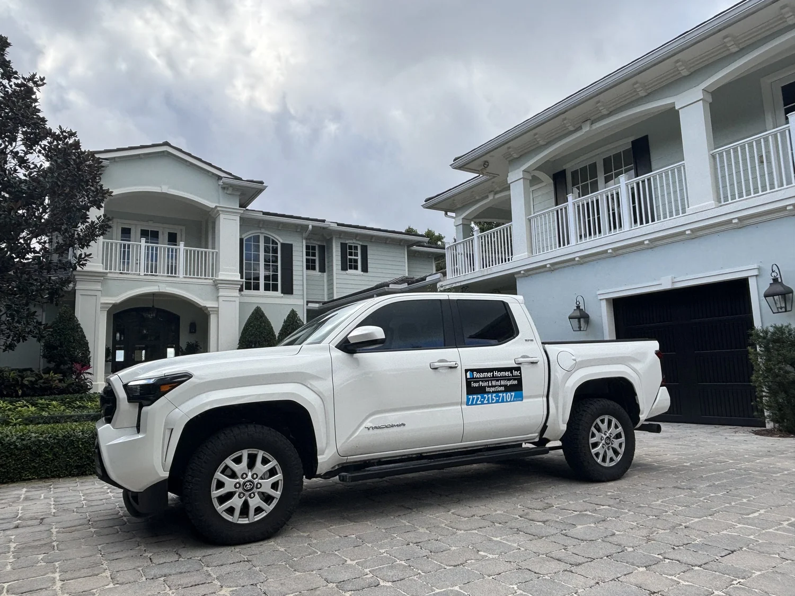
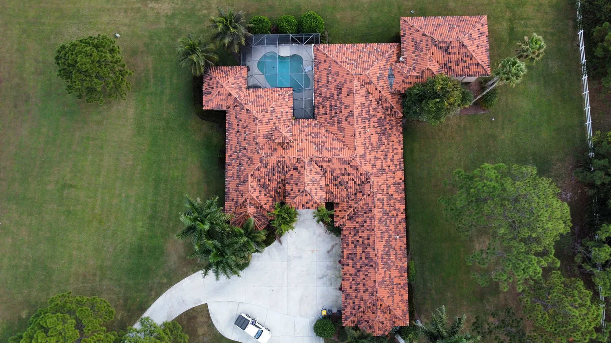
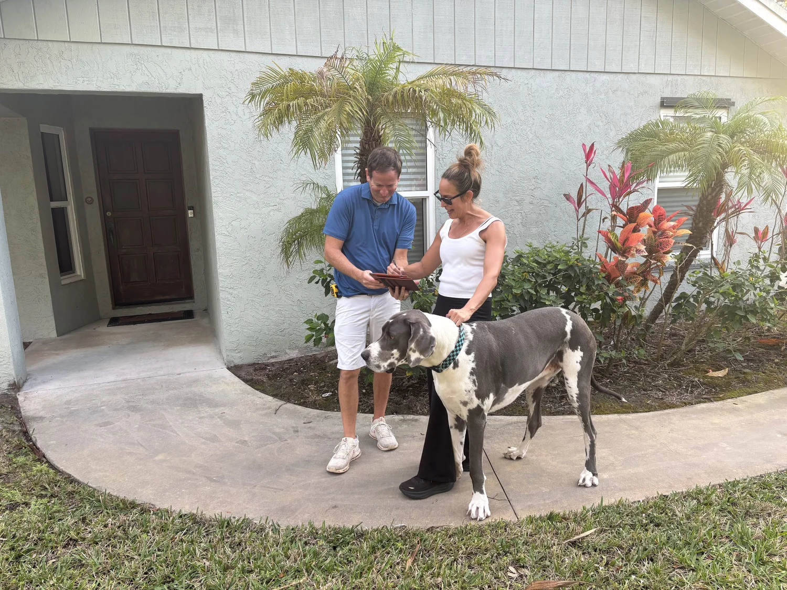
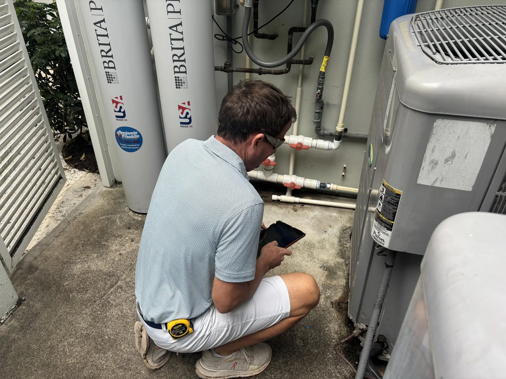

Wind & Four Point Inspections Done Right
Licensed and insured, serving the Treasure Coast and Palm Beaches.
Our Services
Wind Mitigations
A wind mitigation inspection identifies the features that help protect your home during Florida storms. Brian documents your roof, openings, and structural protections to help improve safety and potentially lower insurance costs.
Four Point Inspections
A 4‑point inspection reviews the four major systems of your home — the roof, electrical, plumbing, and HVAC — to document their age, condition, and safety. Brian provides thorough, accurate reports that meet insurance requirements across the Treasure Coast and Palm Beaches.
Roof Certifications
A roof certification inspection evaluates the age, condition, and remaining life of your roof to meet insurance requirements. Brian provides clear, accurate documentation to help homeowners maintain coverage and avoid policy issues.

Who we are
Brian Reamer was born and raised right here in Jensen Beach, and he’s spent more than 20 years working as a trusted home contractor on the Treasure Coast. For the past 18 years, he’s focused on helping homeowners protect their properties through detailed wind mitigation and 4‑point inspections across Martin, St. Lucie, Indian River, and Palm Beach Counties.
As a licensed and insured Florida contractor (CRC1327911), Brian brings a mix of hands‑on experience, local insight, and genuine care for the community he grew up in. He still lives in Jensen Beach with his family, and he takes pride in offering honest, reliable inspection services to neighbors throughout the Treasure Coast and Palm Beaches.

Schedule Your Inspection
Need a wind mitigation or four-point inspection in Martin, St. Lucie, Indian River, or Palm Beach County? Answer a few short questions about your home and we’ll follow up quickly with your quote and get you on the schedule.
- (772) 215-7107
- brianr@reamerhomes.com
- Licensed & insured # CRC1327911
